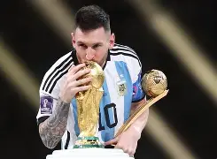
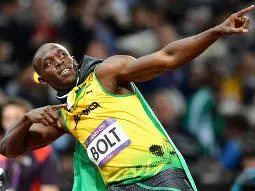
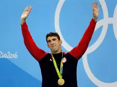
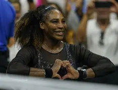
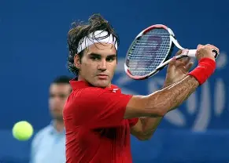
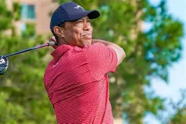
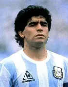
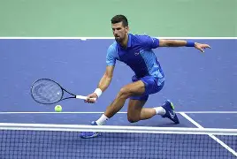
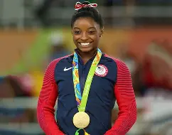

| Nombre | Disciplina | Foto | Perfil / Trayectoria |
|---|---|---|---|
| Lionel Messi | Fútbol |  | Considerado uno de los mejores futbolistas de la historia, campeón mundial con Argentina. |
| Cristiano Ronaldo | Fútbol | Máximo goleador histórico en competiciones europeas, ícono del fútbol mundial. | |
| Usain Bolt | Atletismo |  | Ocho veces campeón olímpico, récord mundial en 100m y 200m. |
| Michael Phelps | Natación |  | Máximo medallista olímpico de la historia con 23 oros. |
| Serena Williams | Tenis |  | Ganadora de 23 títulos de Grand Slam, referente del tenis femenino. |
| Roger Federer | Tenis |  | 20 títulos de Grand Slam, considerado uno de los mejores tenistas de todos los tiempos. |
| Tiger Woods | Golf |  | Figura histórica del golf, ganador de 15 majors. |
| Diego Maradona | Fútbol |  | Campeón mundial en 1986, ídolo eterno del fútbol argentino. |
| Novak Djokovic | Tenis |  | Más de 20 títulos de Grand Slam, número uno mundial en múltiples temporadas. |
| Simone Biles | Gimnasia |  | La gimnasta más laureada de la historia, con múltiples medallas olímpicas y mundiales. |